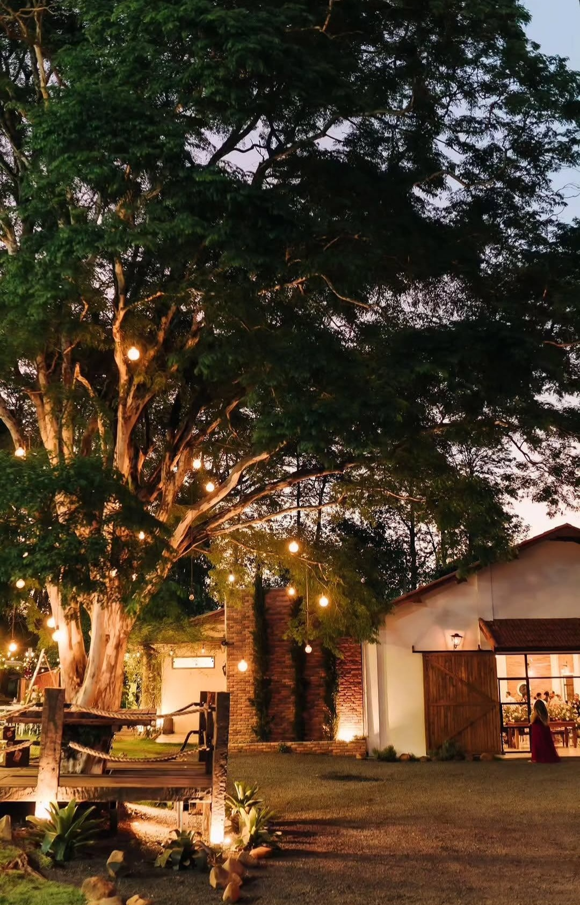

Kauã & Isabela
07/08/2027 · 15h30 · Recanto do Januário
07/08/2027 · 15h30 · Recanto do Januário
07 DE AGOSTO DE 2027 · 16H00


Recanto Januário — Sumaré, SP
Nós nos conhecemos aos 17 anos, quando tínhamos amigos em comum e estávamos saindo do ensino médio. Chegamos a viajar juntos para Olímpia, ainda solteiros e sem imaginar que, anos depois, estaríamos aqui.

A vida seguiu. Cada um viveu suas próprias histórias, e então, nos reencontramos em uma segunda viagem, dessa vez para o interior de São Paulo. Foi ali que começamos a conversar de um jeito diferente, a nos conhecer de verdade, a sair, descobrir afinidades e perceber, aos poucos, que talvez a pessoa certa tivesse estado por perto o tempo todo, só faltava a oportunidade de enxergarmos um ao outro por inteiro.

Quando finalmente aconteceu, deu certo. E desde então, seguimos escolhendo estar juntos. Em março de 2026, veio o pedido. Não foi no meio da multidão ou durante o Lollapalooza, como talvez a história pudesse sugerir. Foi em um Airbnb bonito, durante um café da manhã, só nós dois. Do jeito que precisava ser: simples, íntimo e nosso.

E agora estamos aqui, celebrando não apenas o dia em que decidimos nos casar, mas todos os caminhos que precisaram acontecer para que a gente chegasse um ao outro. Talvez o amor da nossa vida não seja necessariamente alguém que encontramos pela primeira vez. Às vezes, é alguém que a vida coloca no nosso caminho e nos dá uma segunda chance de conhecer.

E que sorte a nossa ter tido essa chance.



Blazer leve, vestido midi, salto médio.
Dress Code: Sport fino (veja exemplos acima).